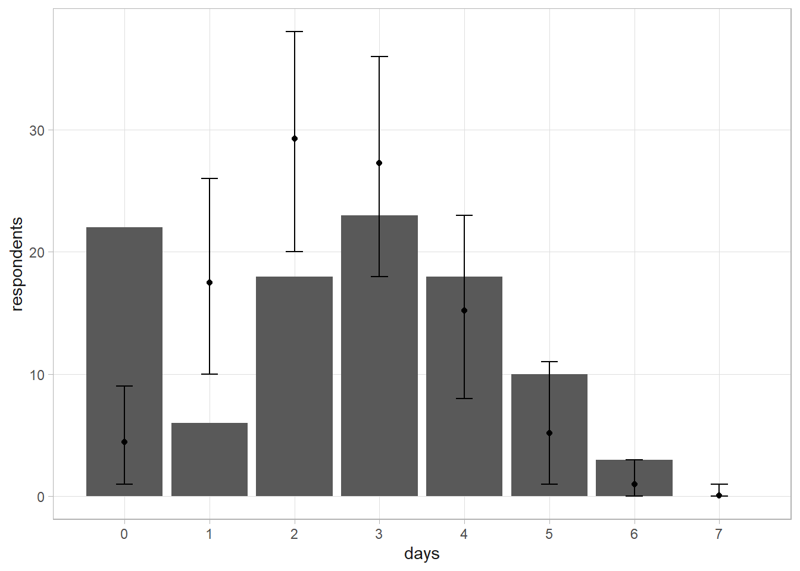

3.7 Zero-Inflation and Latent Variables
Suppose 100 persons report the number of days per week they consume alcohol (0 - 7). What is the posterior estimated probability of a person having a drink on any given day? Drinking days should follow a binomial distribution, so you should be able to estimate \(p\) using a \(\text{Beta}(1, 1)\) prior. The beta posterior would be \(\text{Beta}(252, 450)\).
days <- 0:7
respondents <- c(22, 6, 18, 23, 18, 10, 3, 0)
y <- rep(days, respondents)
# Total events
(drinking_days <- sum(y))
## [1] 251
# Possible events
(n <- 7 * 100)
## [1] 700
# Beta posterior
(a <- 1 + drinking_days)
## [1] 252
(b <- 1 + (n - drinking_days))
## [1] 450
# Posterior mean and 95% CI.
a / (a + b)
## [1] 0.3589744
qbeta(c(.025, .975), a, b)
## [1] 0.3239070 0.3948028The predictive distribution of \(\tilde{y}\) is \(f(\tilde{y}|y) = \int f(\tilde{y}|p) f(p|y) dp\). The way you would normally solve this is to run a simulation. Sample a thousand \(p\)’s from the posterior beta distribution, then use them to sample 100 respondents from the binomial distribution.
set.seed(12345)
p_given_y <- rbeta(10^3, a, b)
# For each p, simulate 7 draws from binomial distribution for the 100 respondents.
sims <- map(p_given_y, ~rbinom(100, 7, .))
# Count the number of times y == [0,7]. Start by converting the 10^3 sims x 100
# participants list into an 8 days x 10^3 sims list. The three metrics are
# vectors of length 8.
sim_y_per_days <- map(days, function(x) map_int(sims, ~sum(. == x)))
means <- map_dbl(sim_y_per_days, mean)
lcl <- map_dbl(sim_y_per_days, ~quantile(.x, .025))
ucl <- map_dbl(sim_y_per_days, ~quantile(.x, .975))
tibble(days, respondents, means, lcl, ucl) %>%
ggplot(aes(x = days)) +
geom_col(aes(y = respondents)) +
geom_point(aes(y = means)) +
geom_errorbar(aes(ymin = lcl, ymax = ucl), width = .2) +
scale_x_continuous(breaks = 0:7)
Uh oh! The problem is that the number of drinking days only follows a binomial distribution for drinkers - abstainers have \(p\) = 0. This phenomena is called zero-inflation. The solution is to model \(p\) conditional on the probability the person drinks, \(\omega\). Let \(z_i = 1\) if respondent \(i\) drinks alcohol at all. Then \((y_i|z_i = 1, p) \sim \text{Bin}(7, p)\), otherwise \(P(y_i =0|z_i = 0) = 1\). Model the probability of \(z_i = 0\) with the Bernoulli distribution, \(z_i|\omega \sim \text{Bern}(\omega)\) where \(\omega \sim \text{Beta}(a_\omega, b_\omega)\).
Implement a Gibbs sampler with uniform priors for \(p \sim \text{Beta}(a = 1, b = 1)\) and \(\omega \sim \text{Beta}(a_\omega = 1, b_\omega = 1)\). Start with the assumption that if \(y_i = 0\) then \(z_i = 0\), so for each respondent
\[ \begin{align} P(z_i = 1| y_i > 0, p, \omega) &= 1 \\ P(z_i = 1| y_i = 0, p, \omega) &= \frac{(1-p)^7 \omega}{(1-\omega) + (1-p)^7 \omega} \end{align} \]
set.seed(12345)
# Start with assumption that if they reported 0, they _never_ drink (y_i=0 -> z_i=0).
z <- as.numeric(y >= 1)
# Run 1,000 iterations, updating p, omega, and z each time.
ITER <- 10^3
# Create monitors to track convergence.
sim_p <- numeric(ITER)
sim_omega <- numeric(ITER)
sim_z <- matrix(nrow = length(y), ncol = ITER)
# Gibbs sampler.
for(iter in 1:ITER) {
# Uniform Beta(1,1) prior for probability the person is a drinker. Posterior
# is based on count of non-zero z's.
omega <- rbeta(1, 1 + sum(z), 1 + (length(z) - sum(z)))
# Uniform Beta(1,1) prior for probability of drinking on any given day. Posterior
# is based on reported drinking days and number of people who are drinkers.
p <- rbeta(1, 1 + sum(y), 1 + (7 * sum(z) - sum(y)))
# Updated probability that respondent is a drinker.
# P(z=1|y>0) = 1 or P(z=1|y=0, p, omega).
prob_z_eq_1 <- if_else(y >= 1, 1,
((1 - p)^7 * omega) / ((1 - omega) + ((1 - p)^7 * omega)))
# Update z.
z <- rbinom(100, 1, prob_z_eq_1)
# update monitors
sim_p[iter] <- p
sim_omega[iter] <- omega
sim_z[, iter] <- z
}
# Estimated probability of being an alcohol drinker.
mean(sim_omega)
## [1] 0.7863099
quantile(sim_omega, c(.025, .975))
## 2.5% 97.5%
## 0.7051111 0.8581847
# Of the alcohol drinkers, the probability of drinking on any given day.
mean(sim_p)
## [1] 0.4533135
quantile(sim_p, c(.025, .975))
## 2.5% 97.5%
## 0.4121130 0.4949042
# mean and 95% CI predicted number of [0,7] drinking days.
z_post_pred <- map(1:ITER, ~rbinom(100, 1, sim_omega))
x_post_pred <- map(1:ITER, ~rbinom(100, 7, sim_p))
# Override the probability with zero when z == 0.
x_post_pred <- map2(x_post_pred, z_post_pred, ~ if_else(.y == 0, 0, .x))
# Count the number of times [0,7] comes up. Average this across the 10^3 experiments.
means <- map_dbl(days, function(x) map_int(x_post_pred, ~sum(. == x)) %>% mean())
lcl <- map_dbl(days, function(x) map_int(x_post_pred, ~sum(. == x)) %>% quantile(.025))
ucl <- map_dbl(days, function(x) map_int(x_post_pred, ~sum(. == x)) %>% quantile(.975))
tibble(days, respondents, means, lcl, ucl) %>%
ggplot(aes(x = days)) +
geom_col(aes(y = respondents)) +
geom_point(aes(y = means)) +
geom_errorbar(aes(ymin = lcl, ymax = ucl), width = .2) +
scale_x_continuous(breaks = 0:7)
Much better. Let’s try another example of modeling with zero inflation. 94 tourists report how many fish they caught during their visit. Estimate the distribution of fish caught. Start with a vague prior, \(\lambda \sim \text{Gamma}(a = .1, b = .1)\). The posterior distribution of \(\lambda|y \sim \text{Gamma}(a + \sum_i{y_i}, b + n)\)
fish <- readr::read_csv("input/fish.csv", col_types = "i") %>% filter(!is.na(catch))
# Simulate 10^3 samples.
set.seed(12345)
# Uniform gamma(a, b) prior.
a <- .01
b <- .01
# Sample gamma 10^3 times from the posterior distribution
sampled_lambda <- rgamma(10^3, a + sum(fish$catch), b + nrow(fish))
y_tilde <- rpois(10^3, sampled_lambda)
# mean and 95% CI predicted number of expected value of fish caught.
mean(y_tilde)
## [1] 2.875
quantile(y_tilde, c(.025, .975))
## 2.5% 97.5%
## 0 6
# mean and 95% CI predicted number of [0, 9] fish caught.
# For 10^3 lambdas, create 94 samples from Poisson dist.
sims <- map(sampled_lambda, ~rpois(nrow(fish), .))
# Count the number of times [0,10] comes up. Average this across the 10^3 experiments.
catch <- 0:max(fish$catch)
means <- map_dbl(catch, function(x) map_int(sims, ~sum(. == x)) %>% mean())
lcl <- map_dbl(catch, function(x) map_int(sims, ~sum(. == x)) %>% quantile(.025))
ucl <- map_dbl(catch, function(x) map_int(sims, ~sum(. == x)) %>% quantile(.975))
tibble(catch, means, lcl, ucl) %>%
left_join(fish %>% count(catch, name = "y"), by = join_by(catch)) %>%
ggplot(aes(x = catch)) +
geom_col(aes(y = y)) +
geom_point(aes(y = means)) +
geom_errorbar(aes(ymin = lcl, ymax = ucl), width = .2) +
scale_x_continuous(breaks = 0:10) +
labs(title = "Zero inflation in fish caught.")
This doesn’t look good. The probability of 27 people catching 0 fish when the expected number of fish is 2.9 is less than .001.
# probability of 27 people with catching 0 fish given lambda = 2.9 is <.001.
(lambda_est <- (a + sum(fish$catch)) / (b + 94))## [1] 2.925327## [1] 1.064884e-12Add a binary latent variable to the model describing whether or not the person was fishing Assign a uniform prior to the probability that the person was fishing Derive posterior conditional distributions and construct a Gibbs sampler to estimate your model
set.seed(12345)
# Reported number of fish caught by 94 respondents.
y <- fish$catch
# Start with assumption that if they caught 0, they did not fish (y_i=0 -> z_i=0).
z <- as.numeric(y >= 1)
# Run 1,000 iterations, updating p, omega, and z each time.
ITER <- 10^3
# Create monitors to track convergence.
sim_lambda <- numeric(ITER)
sim_omega <- numeric(ITER)
sim_z <- matrix(nrow = length(y), ncol = ITER)
# Gibbs sampler.
for(iter in 1:ITER) {
# Uniform Beta(1,1) prior probability the person fished. Posterior is based on
# count of non-zero z's.
omega <- rbeta(1, 1 + sum(z), 1 + (length(y) - sum(z)))
# Vague Gamma(.01,.01) prior for number of fish caught. Posterior is based on
# reported catch and number of believed fishers.
lambda <- rgamma(1, .01 + sum(y), .01 + sum(z))
# Updated probability that respondent fishes.
# E(z=1|x) = 1 or P(1|x=0, p, omega).
prob_y_eq_0 <- exp(-lambda) * lambda^0 / factorial(0)
prob_z_eq_1 <- if_else(y >= 1, 1,
(prob_y_eq_0 * omega) / ((1 - omega) + (prob_y_eq_0 * omega)))
# Update z.
z <- rbinom(length(y), 1, prob_z_eq_1)
# update monitors
sim_lambda[iter] <- lambda
sim_omega[iter] <- omega
sim_z[, iter] <- z
}
# Estimate of tourists who fished. Throw out first 100 as burn-in.
mean(sim_omega[-c(1:100)])
## [1] 0.7219762
quantile(sim_omega[-c(1:100)], c(.025, .975))
## 2.5% 97.5%
## 0.6281519 0.8081336
# Of those who fished, the expected number caught. Throw out burn-in again.
# tibble(x = 1:1000, y = sim_lambda) %>% ggplot(aes(x = x, y = y)) + geom_point()
mean(sim_lambda[-c(1:100)])
## [1] 4.048745
quantile(sim_lambda[-c(1:100)], c(.025, .975))
## 2.5% 97.5%
## 3.573121 4.598533
# or is it this (E(X) = a/b? Not this either.
(.01 + sum(y)) / (.01 + sum(z))
## [1] 4.104014
# mean and 95% CI predicted number of [0,9] fish caught.
z_post_pred <- map(1:ITER, ~rbinom(length(z), 1, sim_omega))
y_post_pred <- map(1:ITER, ~rpois(length(y), sim_lambda))
# Override the count with zero when z == 0.
y_post_pred <- map2(y_post_pred, z_post_pred, ~ if_else(.y == 0, 0, .x))
# Count the number of times [0,9] comes up. Average this across the 10^3 experiments.
means <- map_dbl(0:9, function(x) map_int(y_post_pred, ~sum(. == x)) %>% mean())
lcl <- map_dbl(0:9, function(x) map_int(y_post_pred, ~sum(. == x)) %>% quantile(.025))
ucl <- map_dbl(0:9, function(x) map_int(y_post_pred, ~sum(. == x)) %>% quantile(.975))
# Probability of 27 of 94 people with a catch of 0. Sample the posterior
# predictive distribution.
posterior_pred <- matrix(rpois(ITER * length(y), rep(sim_lambda, length(y))), ncol = ITER) * sim_z
posterior_zeros <- map_int(1:ITER, ~sum(posterior_pred[, .] == 0))
mean(posterior_zeros[100:ITER] >= sum(y==0))
## [1] 0.6492786
tibble(catch = 0:9, means, lcl, ucl) %>%
left_join(fish %>% count(catch, name = "y"), by = join_by(catch)) %>%
ggplot(aes(x = catch)) +
geom_col(aes(y = y)) +
geom_point(aes(y = means)) +
geom_errorbar(aes(ymin = lcl, ymax = ucl), width = .2) +
scale_x_continuous(breaks = 0:10)